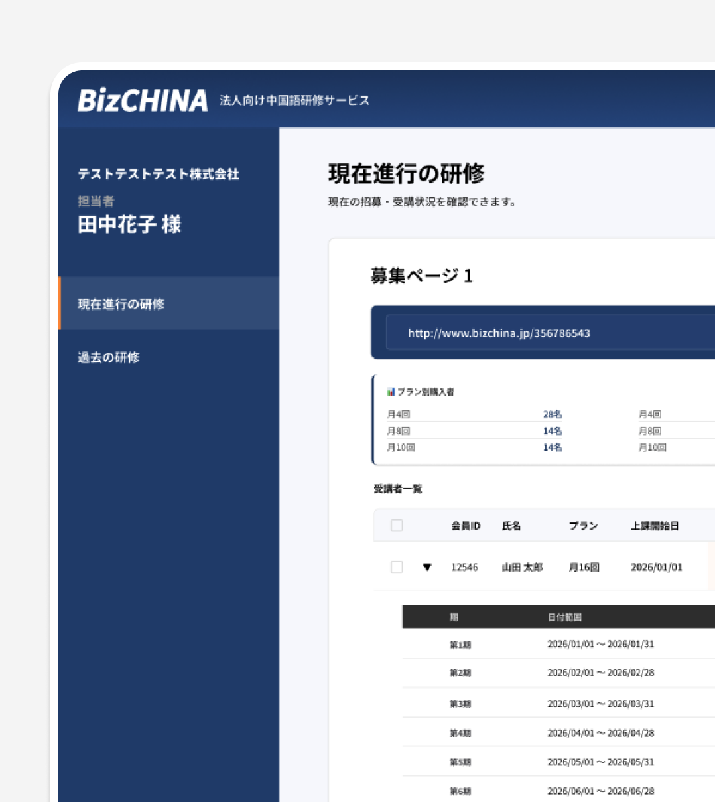
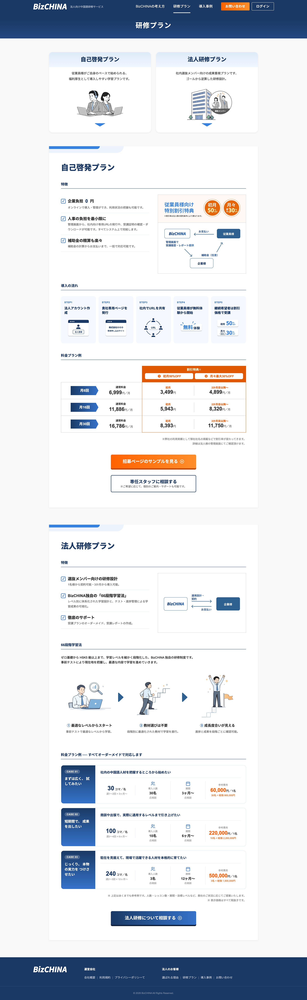
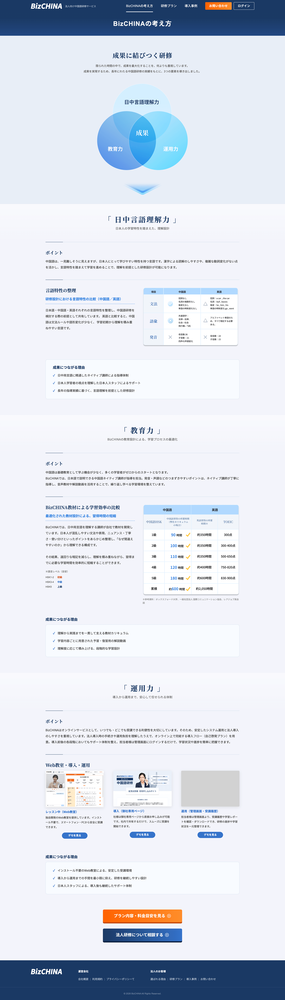
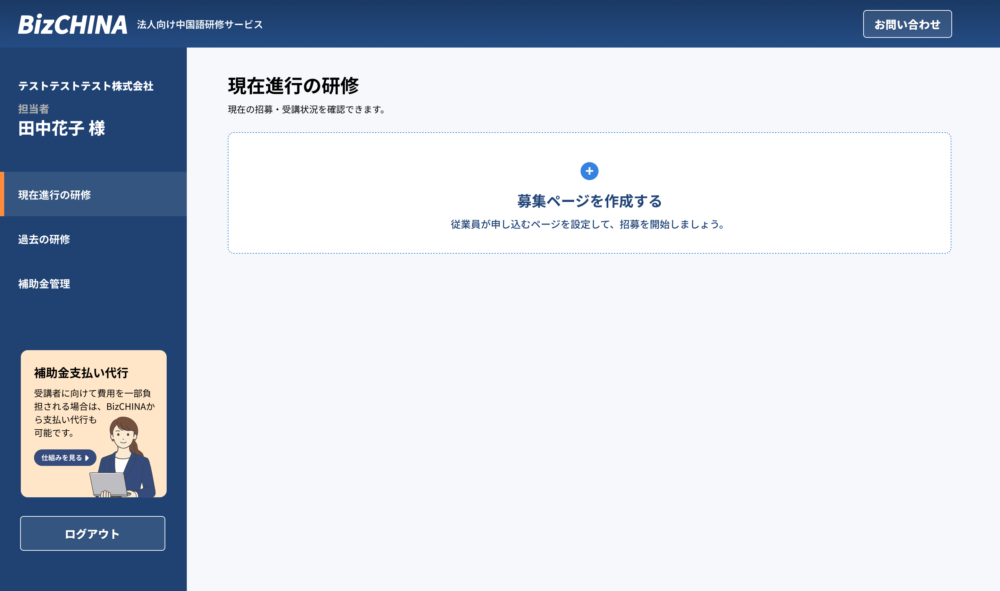
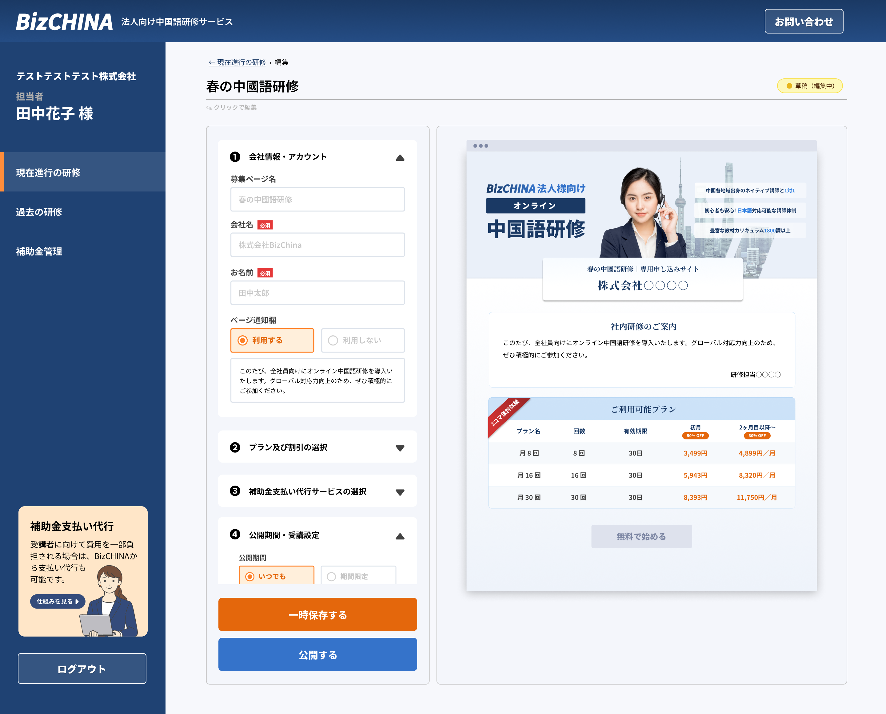
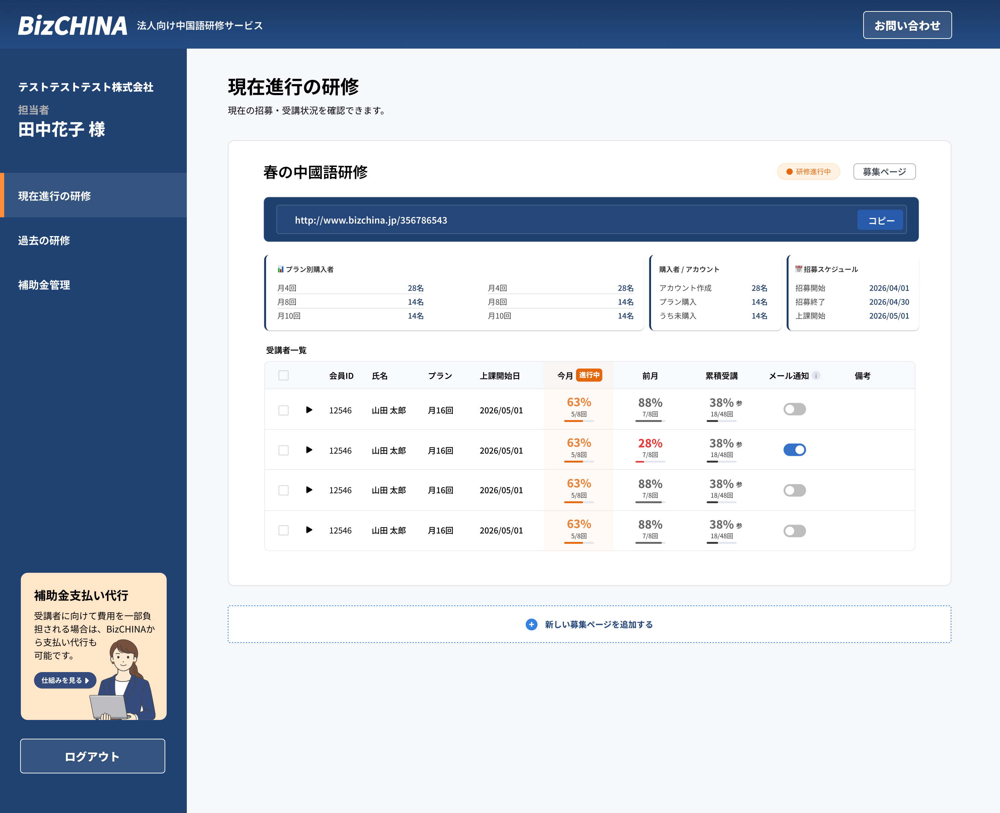
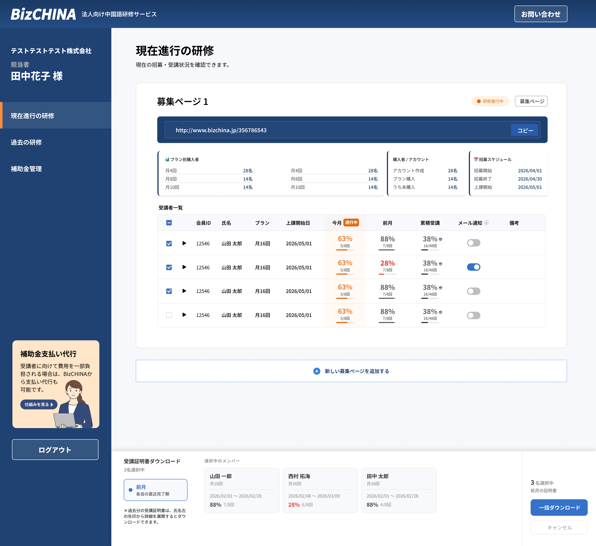
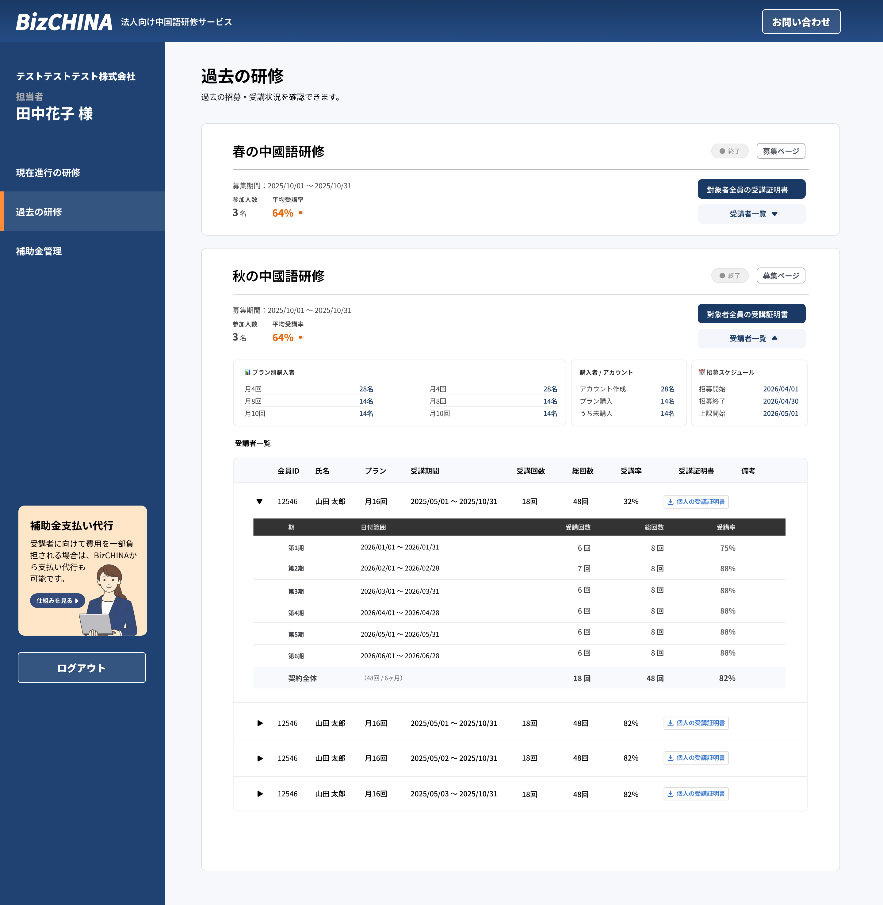

Product Design / UI・UX
法人研修管理システム
導入から受講管理まで、
法人研修をひとつにつなぐ。
Background
企業向け中国語研修のサービスサイトと、研修担当者向けの管理機能を設計したプロジェクト。
サービスの紹介・プラン比較から、申し込みページ作成・受講管理までを扱います。
BizCHINAと同じ会社・同じ6人のチームで進めた法人向けプロジェクトです。後台の中心的な課題は、担当者の手作業や個別対応に頼っていた研修管理を、継続して運用できるシステムへ置き換えることでした。
My Contribution
法人向けサービス紹介ページの設計と、管理者向け業務フローの整理を担当。関係者と要件を確認し、操作できるプロトタイプを通して、申し込みから受講管理・証明書発行までの流れを具体化しました。
Tools & Workflow
Figmaで画面と操作フローを設計。初期のプロトタイプ作成にはAIツールも補助的に活用し、関係者と仕様や操作の抜け漏れを確認しました。
法人向けのサービス紹介から、研修プランの比較・導入相談までの前台画面も設計しました。研修の導入を検討する担当者が、サービスの特徴と導入方法を確認できる構成です。


本サイトは現在開発中です。掲載内容は今後変更となる場合があります。

個々の画面を整えるだけでなく、申し込み・受講状況の確認・リマインド・証明書発行までの管理方法を整理し、システム上の操作と情報の流れとして設計する必要がありました。担当者の経験に依存する運用を、誰でも追える一貫した業務フローに変えることが、法人後台の設計課題です。
研修の手配や進捗の確認がほぼすべて手作業で、担当者の頑張りに頼りきりの運用になっていました。受講者が増えれば増えるほど、そのまま担当者の負担も増えてしまう状態でした。
受講が遅れている人に声をかけるのは、同じ職場の人間関係の中では気を使う場面です。この「言いにくい」という気持ちが、受講が進まない原因のひとつになっていると考えました。
受講者それぞれがどこまで進んでいるか、その場ですぐには確認できない状態でした。問題に気づくのが遅れやすく、担当者が画面を見るだけで全体がわかる設計が必要だと考えました。
申し込みページの作成から受講管理・証明書の発行まで、担当者がひとつの画面で完結できるよう設計しました。それまでバラバラに行っていた対応を一か所に集約することが、このプロジェクトの中心にある考えです。
設計を進めるにあたっては、アイデアがまだ仮説の段階から、操作フローをベースにした簡単なプロトタイプを作りながら確認するプロセスを取り入れました。画面を実際に動かして試すことで、文章だけでは見落としやすい抜け漏れに早めに気づけますし、関係者と「こういう流れになりますよね」と認識をそろえる場もつくりやすくなります。プロトタイプ作成にはAIツールも補助的に活用しながら、設計の精度を少しずつ上げていきました。
誰かに頼まずに、従業員向けの申し込みページを担当者自身が作って公開できるようにしました。画面右側にリアルタイムプレビューを置いているので、設定を変えながら完成形をその場で確認できます。

担当者がいちばん最初に知りたいのは「全員ちゃんと進んでいるか」ということ。受講が遅れている人は色でひと目でわかるようにし、スクロールしなくても全体が把握できるレイアウトにしました。画面を開いた瞬間に状況を理解できることを意識した設計です。
リマインドメールをシステムから自動で送れるようにすることで、担当者が「また言うのも気まずいな」と感じる場面をなくしました。声をかけるかどうか迷わずに済むことが、受講率の改善につながると考えた設計です。

受講証明書は一人ずつではなく、複数名を選んでまとめてダウンロードできるようにしました。締め切りのある手続きにも対応できるよう、操作をできるだけシンプルに保つことを意識しています。また、過去の研修の記録を振り返れるページも設けて、継続して使い続けてもらえる設計にしました。


「機能が動くかどうか」だけでなく、「担当者がどんな気持ちでこの画面を使うか」まで考えて設計することを意識したプロジェクトでした。特にリマインド機能は、職場の人間関係という技術とは関係のない部分が設計の判断に影響した例で、UIの設計が「使う人の行動」にどこまで関われるかを考えるきっかけになりました。